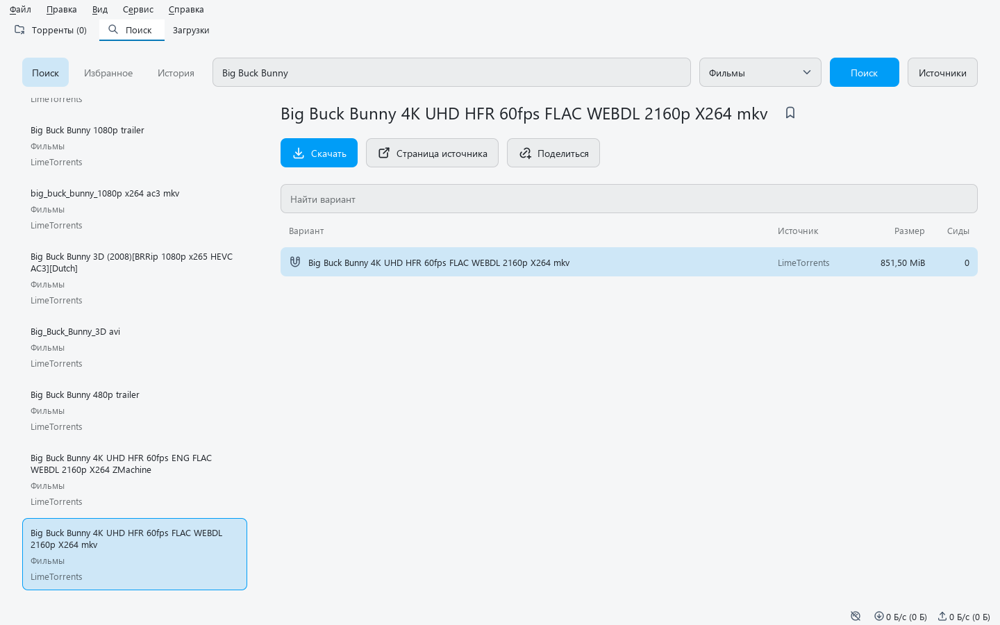

Выбор раздачи
Выбирайте язык, качество и нужное издание, смотрите размер и количество сидов. История сохраняет выбранную раздачу.
Сравнивайте варианты из разных источников и скачивайте выбранную раздачу. Видео открывается в qplay, книги и манга — во встроенной читалке.

Выбирайте язык, качество и нужное издание, смотрите размер и количество сидов. История сохраняет выбранную раздачу.
Видео можно передать в qplay, в том числе начать просмотр торрентного файла до конца загрузки. Во встроенной читалке доступны главы и сохранение позиции.